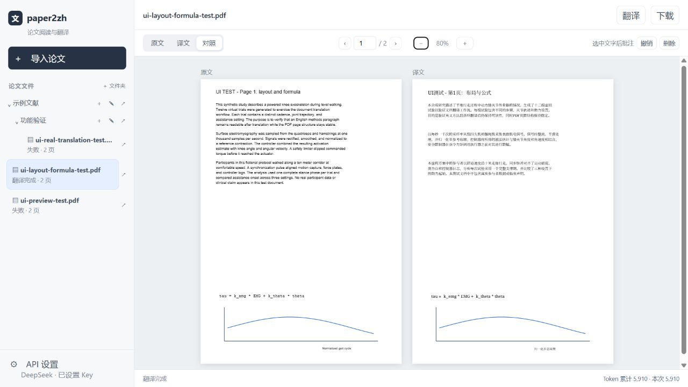

Windows 本地论文工作区读懂论文，
读懂论文，
保留阅读的节奏。
导入 PDF，左右对照原文与中文译文。公式、图形和页面结构尽可能留在原位；选中文字即可批注。论文和阅读记录由你在本机管理。
v1.0.0 · Windows 64 位 · 需要自行配置兼容 API
THE READER
熟悉的论文，
更顺手的读法。
左侧整理文献和文件夹，右侧阅读原文、译文或对照。翻页与缩放同步，文字可选、可高亮、可下划线。
下图为真实应用界面，展示的是合成测试论文。

BUILT FOR READING
从导入到复读，都在一个地方。
先阅读原文，再按需要翻译指定页或全文。翻译完成后继续用同一个工作区整理和标记。
原译对照
PDF 页面同步翻页与缩放。BabelDOC 尽量保留公式、矢量图形和原有页面结构。
文字批注
选中文字添加四色高亮或下划线；批注保存在本机，也可导出含标准批注的 PDF 副本。
你的 API，你的用量
自行设置服务商、地址、模型和 Key。翻译进度及服务返回的 Token 用量在界面中可见。
GET STARTED
安装后，三步开始阅读。
01 / 安装
下载 Windows 安装包
安装桌面应用。首次翻译可能需要下载 BabelDOC 模型和字体资源，请保持网络连接。
02 / 设置
配置翻译服务
在应用左下角保存兼容 API 的服务商、地址、模型和 Key，并使用“测试连接”确认。
03 / 阅读
选择本机 PDF
通过系统文件窗口导入论文，可先读原文，再选择试译页码或翻译全文。
论文、批注和 API 设置保存在本机；实际翻译时，论文文字会发送至你配置的 API 服务。翻译可能产生服务商费用。中文文字长度、字体和换行会影响局部排版，无法保证与原文逐像素一致。
下一篇论文，就从这里打开。
paper2zh 1.0.0 为 Windows 64 位提供本地桌面阅读体验。下载安装包后即可开始建立你的论文工作区。
前往 GitHub 下载 ↗需要 Windows WebView2 运行时